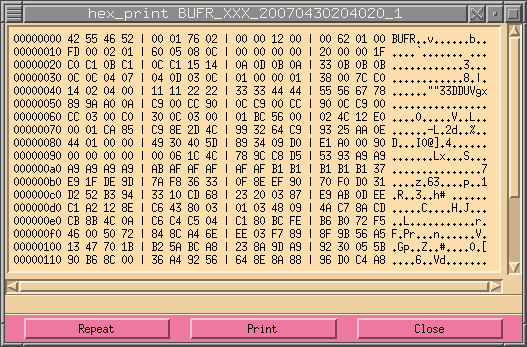
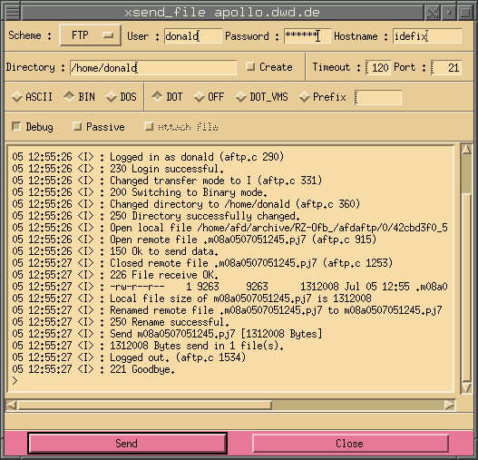
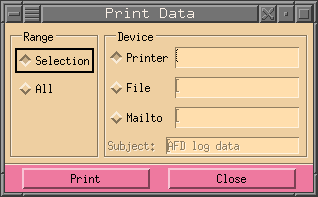

Holger.Kiehl@dwd.de
Last updated: 04.03.2023
![[red dot]](../images/reddot.gif) IndexHome
IndexHome
All files unsent and queued files of AFD, can be viewed with this dialog.
| 1 | Enter the start and end time of the search. If no value is entered it will always take the earliest or latest entries it finds. There are two time forms. One is the absolute and the other is the relative time format. The following absolute forms are possible: MMDDhhmm, DDhhmm and hhmm (MM = month [01-12], DD = day [01-31], hh = hour [00 - 23], mm = minute [00 - 59]). The relative form always starts with a hyphen '-' and has the following format: -DDhhmm, -hhmm or -mm. |
| 2 | Shows the current date and time in the following format: DD.MM.YYYY hh:mm |
| 3 | Enter a file name. The name may have any number of the two following wild cards: * and ?. If no file name or wild card is entered it will always search for all file names. Multiple file names/patterns can be entered by separating them with a pipe (|). |
| 4 | Here it is possible to enter the length/size of a file. If a < or a > sign it will search for files less then or greater then the given size. |
| 5 | The source directory where the AFD has picked up the file. Even here it is possible to enter wild cards. Sometimes it can be easier if you just enter the directory ID. However this must have a leading # for it to be detected as directory ID. One can also enter the directory alias with a leading @ sign. Multiple directory names and/or ID's can be entered by separating them with a comma (,). |
| 6 | Here you can enter a remote host name and only files that where send to this host will be shown. It is also possible to enter more then one host, by separating the hosts with a comma (,). Wild cards can also be used. |
| 7 | This selection box is for the output part ie files considered by FD. You may select those that are queued, for example if the transfer is stopped and/or there is no process slot free for this job and the files have to wait. When the button Unsent is set all files that are currently being transmitted or those in a job that is scheduled to be transmitted are shown as well. NOTE: It is no possible to remove unsent files. |
| 8 | In this selection box the incoming part (AMG) of files queued (when the queue has been stopped) or files that are in the source directory are shown. Here it is possible to delete all files even those marked as Unsent. |
| 9 | Here retrieve jobs can be selected. There can be two types of retrieve jobs, one where the process is currently retrieving files (Retrieve) and the second when a retrieve job is pending (Pending). These can be deleted by selecting them and pressing the delete button. |
| 10 | If selected, time jobs within AFD will be shown. |
| 11 | These toggle buttons allow the user to toggle between different length of the file name in the list box. The short one is useful when printing on A4 paper. |
It is not necessary to fill in any values, however it might be, depending on the number of files in the queue, that the numbers found is very large. While the dialog is searching for data, the function of the search button changes into a stop button, enabling the user to interrupt the search (this does not yet work very well, it depends very much on the speed of the machine). This button and the slider of the list widget are the only buttons that are active during a search. Thus, the user can search in the list widget by using the slider, while the dialog is still searching. Once a search is interrupted, the search will always start from the beginning.
Here follows a short description of the list widgets and the meaning of each item:
| Date | The date in the following format: MM.DD. where MM is the month (01-12) and DD is the day of the month (01-31). | ||||||||||||||||
| Time | The time in the following format: hh:mm:ss where hh is the hour (00-23), mm is the minute (00-59) and ss is the second (00-59). | ||||||||||||||||
| File name | The file name as it was found. | ||||||||||||||||
| Type |
|
||||||||||||||||
| Hostname | The host name of the remote host. | ||||||||||||||||
| File size | The size of the file in bytes. |
When the file name is longer then it is shown in the list widget it is still possible to view it by using the 'AFD info click'. This is done by pressing the right mouse button while the cursor is over the wanted item in the list widget. The following window will pop up for a file in the output queue:
And for the input queue it will look as follows:
And for the retrieve queue it will look as follows:
As shown, this window also shows what is configured in the DIR_CONFIG for this file.
Directly under the list file listing of the queue is the summary line showing, if no item is selected, the sum of all files and the total size. If files are selected it will show the sum of all selected files.
Under the summary line follows a status line showing what it is currently doing and what it has done. At the end of a search it will print how long the search took.
At the bottom is a line with up to six (depending on user permissions) buttons which have the following meaning:
| Search | Pressing this button will start the search. During the search the name of the button will change to Stop. Pressing this will interrupt the search and the button will be renamed to Search again. Pressing search again will start the search from the beginning and not where it was when it was interrupted. | |
| View | Depending on what is configured in AFD_CONFIG, this will show the image or the content of the dialog. By default when nothing is configured it will show the content of the file as shown on the right side. See VIEW_DATA_PROG for more details on how to set this to use other programs to view the data. Only data that is in the queue can be viewed. |  |
| Delete | The selected files will be deleted if they are in the queue. This means you cannot delete delete unsent files in the output queue and the active retrieve jobs (those marked (OU, OEU and R). | |
| Send | This will popup the xsend_file dialog which will allow you to send the selected files to some other destination if the selected files are in the queue. |  |
| This will popup another dialog which can be used to print what is shown to a separate file, send it in a mail to someone or print it to a printer. The Range field allows to specify what will be printed, either what has been selected or everything. |  | |
| Close | Closes this dialog. |
|
Copyright © 2001 - 2023 by H.Kiehl Holger.Kiehl@dwd.de Last updated: 04.03.2023 |
Index |
Home |